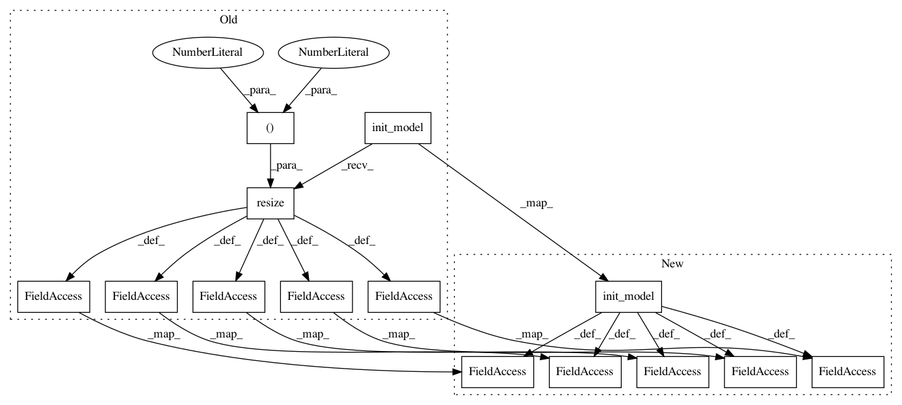

75bc2c9bebd140fe410fdf64dcffda43f3ee0008,examples/opensets/mnist_model3.py,,,#,19
Before Change
mnist = MNIST()
train_template = (Pipeline(config=dict(model=VGG7))
.init_variable("model", VGG16)
.init_variable("loss_history", init_on_each_run=list)
.init_variable("current_loss", init_on_each_run=0)
.init_variable("pred_label", init_on_each_run=list)
.init_model("dynamic", V("model"), "conv",
config={"inputs": dict(images={"shape": B("image_shape")},
labels={"classes": 10, "transform": "ohe", "name": "targets"}),
"input_block/inputs": "images",
//"body/block/bottleneck": 1,
//"head/units": [100, 100, 10],
"nothing": F(lambda batch: batch.images.shape[1:]),
//"filters": 16, "width_factor": 1,
//"body": dict(se_block=1, se_factor=4, resnext=1, resnext_factor=4, bottleneck=1),
"output": dict(ops=["accuracy"])})
.resize(shape=(16, 16))
.train_model("conv", fetches="loss",
feed_dict={"images": B("images"),
"labels": B("labels")},
save_to=V("current_loss"), use_lock=True)
.print_variable("current_loss")
.update_variable("loss_history", V("current_loss"), mode="a"))
train_pp = (train_template << mnist.train)
print("Start training...")
t = time()
train_pp.run(BATCH_SIZE, shuffle=True, n_epochs=1, drop_last=False, prefetch=0)
print("End training", time() - t)
print()
print("Start testing...")
t = time()
test_pp = (mnist.test.p
.import_model("conv", train_pp)
.init_variable("accuracy", init_on_each_run=list)
.predict_model("conv", fetches="accuracy", feed_dict={"images": B("images"),
"labels": B("labels")},
save_to=V("accuracy"), mode="a")
.run(BATCH_SIZE, shuffle=True, n_epochs=1, drop_last=True, prefetch=0))
print("End testing", time() - t)
accuracy = np.array(test_pp.get_variable("accuracy")).mean()
print("Accuracy {:6.2f}".format(accuracy))
conv = train_pp.get_model_by_name("conv")
After Change
mnist = MNIST()
train_template = (Pipeline(config=dict(model=VGG7))
.init_variable("model", ResNetAttention56)
.init_variable("loss_history", init_on_each_run=list)
.init_variable("current_loss", init_on_each_run=0)
.init_variable("pred_label", init_on_each_run=list)
.init_model("dynamic", V("model"), "conv",
config={"inputs": dict(images={"shape": B("image_shape")},
labels={"classes": 10, "transform": "ohe", "name": "targets"}),
"input_block/inputs": "images",
//"body/block/bottleneck": 1,
//"head/units": [100, 100, 10],
//"nothing": F(lambda batch: batch.images.shape[1:]),
//"filters": 16, "width_factor": 1,
//"body": dict(se_block=1, se_factor=4, resnext=1, resnext_factor=4, bottleneck=1),
"output": dict(ops=["accuracy"])})
//.resize(shape=(16, 16))
.train_model("conv", fetches="loss",
feed_dict={"images": B("images"),
"labels": B("labels")},
save_to=V("current_loss"), use_lock=True)
.print(V("current_loss"), model=C("model"))
.update_variable("loss_history", V("current_loss"), mode="a"))
train_pp = (train_template << mnist.train)
print("Start training...")
t = time()
train_pp.run(BATCH_SIZE, shuffle=True, n_epochs=1, drop_last=False, prefetch=0)
print("End training", time() - t)
print()
print("Start testing...")
t = time()
test_pp = (mnist.test.p
.import_model("conv", train_pp)
.init_variable("accuracy", init_on_each_run=list)
.predict_model("conv", fetches="accuracy", feed_dict={"images": B("images"),
"labels": B("labels")},
save_to=V("accuracy"), mode="a")
.run(BATCH_SIZE, shuffle=True, n_epochs=1, drop_last=True, prefetch=0))
print("End testing", time() - t)
accuracy = np.array(test_pp.get_variable("accuracy")).mean()
print("Accuracy {:6.2f}".format(accuracy))
conv = train_pp.get_model_by_name("conv")
In pattern: SUPERPATTERN
Frequency: 3
Non-data size: 14
Instances
Project Name: analysiscenter/batchflow
Commit Name: 75bc2c9bebd140fe410fdf64dcffda43f3ee0008
Time: 2017-12-07
Author: rhudor@gmail.com
File Name: examples/opensets/mnist_model3.py
Class Name:
Method Name:
Project Name: analysiscenter/batchflow
Commit Name: 00fedd237606ed6c8133cc2c7e31489b781e230e
Time: 2017-12-11
Author: rhudor@gmail.com
File Name: examples/opensets/mnist_model3.py
Class Name:
Method Name:
Project Name: analysiscenter/batchflow
Commit Name: fc6c75deed83ab3b85c47e53656ab85289eaea66
Time: 2018-01-15
Author: rhudor@gmail.com
File Name: examples/opensets/mnist_model3.py
Class Name:
Method Name: